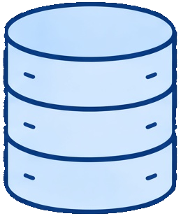
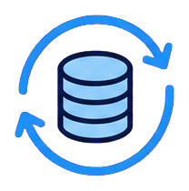
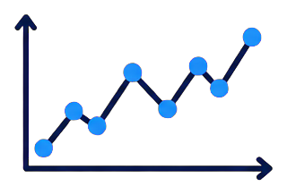
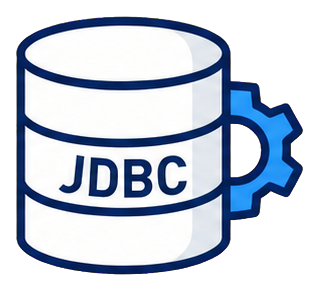
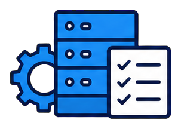
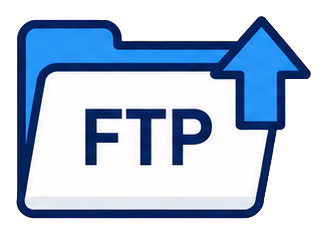

원천데이터 계층
기관계 / 정보계
IoT / CSV / 파일 / 기타
e-Mapp
ETL + AI + 시각화를 결합한 빅데이터 통합 분석 플랫폼
정형·비정형 데이터를 통합 분석하고, 의사결정에 필요한
지식과 인사이트를 추출하는 One-Stop End-to-End 플랫폼
ETL AI/ML
AI/ML
시각화 GS 1등급
GS 1등급* 2025년 7월 e-Mapp 2.0 GS 1등급 획득
기관계 / 정보계
IoT / CSV / 파일 / 기타
Collector / JDBC / REST API
(s)FTP / File Upload / Crawling
Scheduler / Administrator
Data Analyzer / Data Mart

포털 · 그리드 · 대시보드
차트 · 리포트 · 분석노트
인메모리 방식으로 처리해 속도·그리드 관리·통계 처리를 한층 더 빠르고 안정적으로 제공합니다.
| 구분 | 모듈명 | 주요 역할 |
|---|---|---|
| 솔루션 | Collector & 데이터 수집 | Channel API · 다양한 원천 데이터 수집 |
| 데이터 스토리지 / 데이터 전처리 | 대용량 데이터 저장·정제 및 표준화 | |
| AI Modeler & 데이터 분석 | AI 분석 · 분석 패키지 · 예측 모델 | |
| Visualizer & 시각화 분석 | 차트·그리드·대시보드 기반 인사이트 제공 | |
| Data Viewer & 분석노트 | 통계·드릴다운·리포팅을 통한 결과 탐색 | |
| Data Meta & 사용자 분석 | 사용자·로그·메타데이터 관리 |
분석 목적에 따라 모듈을 선택적으로 사용하고, 데이터 수집부터 분석·시각화까지 하나의 워크플로로 연결할 수 있습니다.

오토ML·모델 운영
시뮬레이션 기능전처리부터 분석과 시각화까지 전 과정을 한 화면에서 연결해 업무 효율과 활용성을 높입니다.

사용자 현황 확인접속·활동 이력
스케줄 통합 관리운영 계획 관리
권한 인증접근 통제 기능| 항목 | 내용 |
|---|---|
| 대용량 처리 | 정형·비정형 통합 분석 |
| 처리 방식 | ETL · 인메모리 |
| AI 기반 | 오토ML·AI·시스템라이징 |
| 분석·시각화 | 데이터 스토리지 · 시각화 |
| 호환성 | 다양한 채널과 연계 |
| 품질 인증 | GS 1등급 (e-Mapp 2.0) |